I've recently started a new series of projects on 3D printing, but I am shifting away from using SketchUp and wanted something more like AutoCAD for the mechanical design. The closest thing that found was Adobe Inventor which is free for student use using your .edu email address, but it only works on Windows machine. So I decided setup a VirtualBox Windows7 64bit image on my Mac OSX (Mavericks). The VirtualBox official documentationis good for reference but its a bit too comprehensive and outdated for VirtualBox 4.3.12 in a few of the steps. This tutorial assumes that you have already downloaded the latest version of VirtualBox and executed the .dmg file (or .exe for Windows).
Creating a Windows7 image
1)
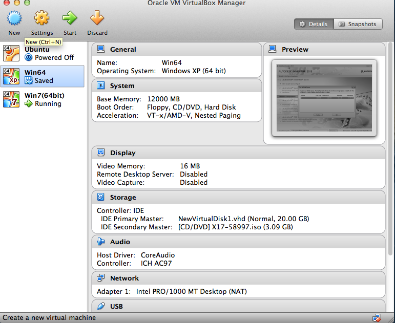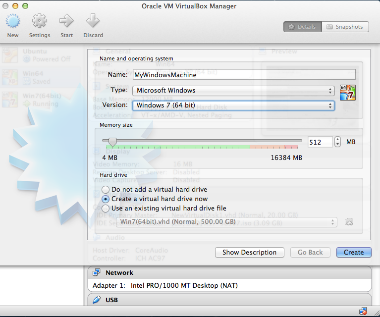
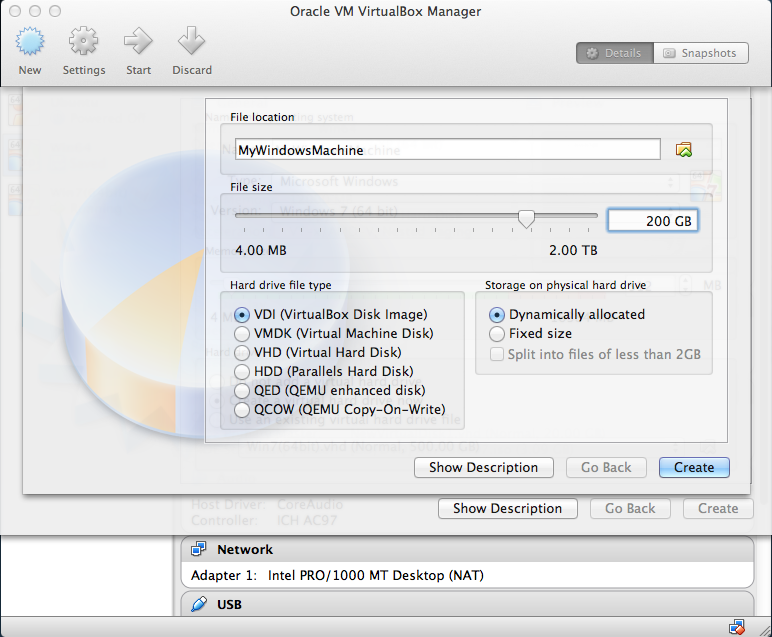
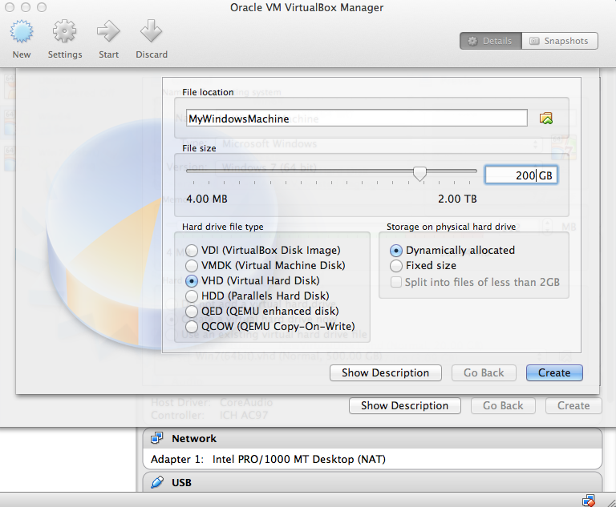
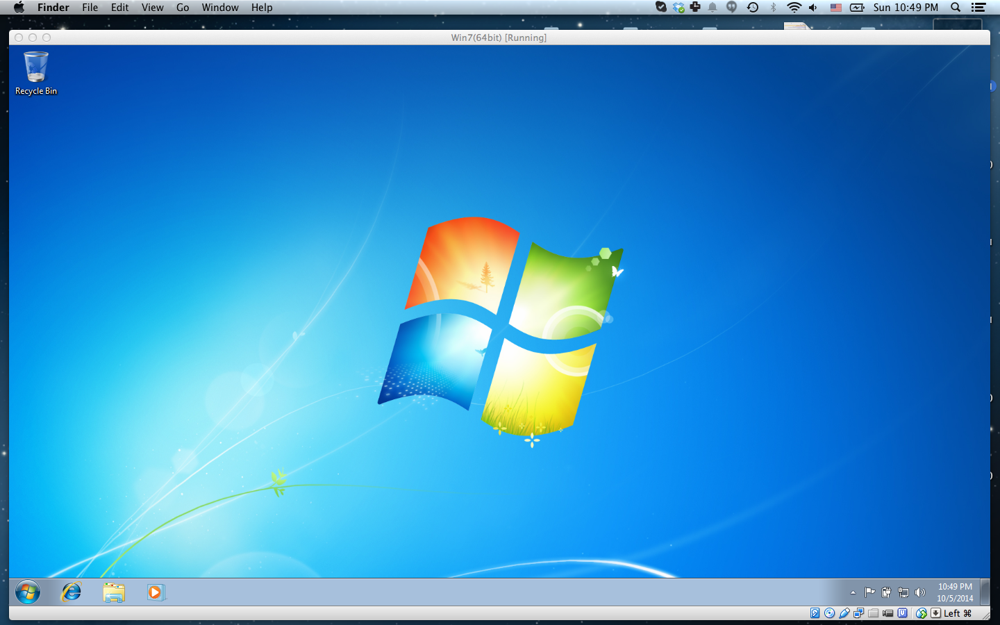
Starting up the virtual machine
Now this was the part that I was really stuck on. 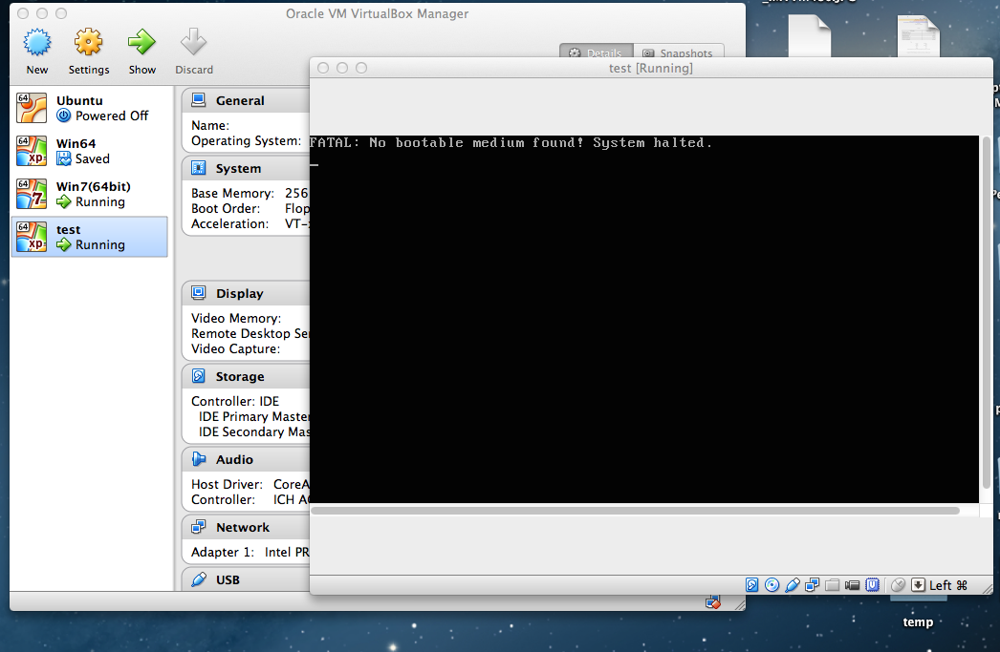Window OS installation steps
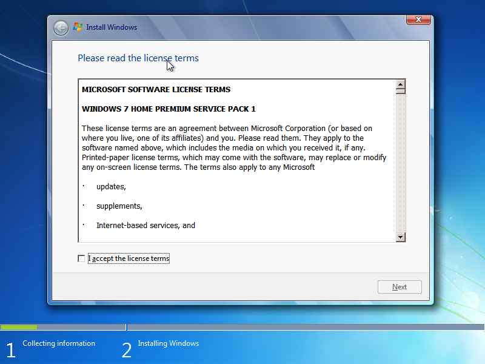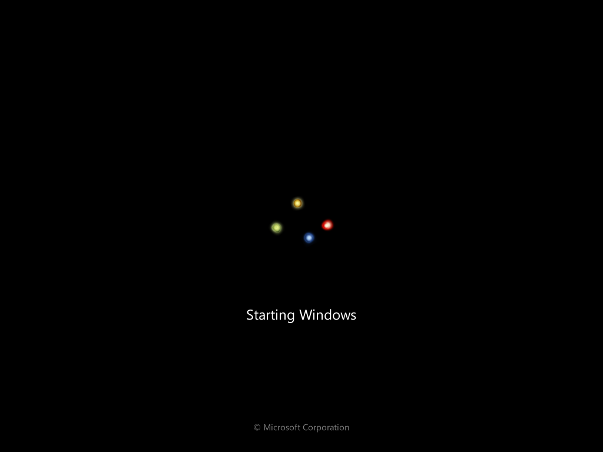
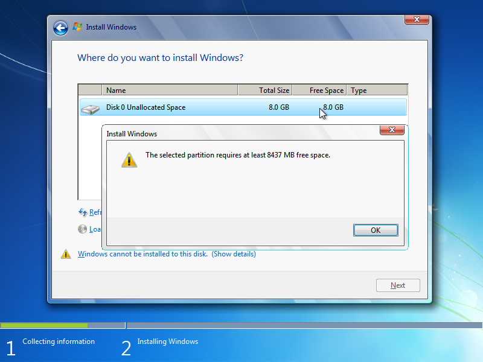
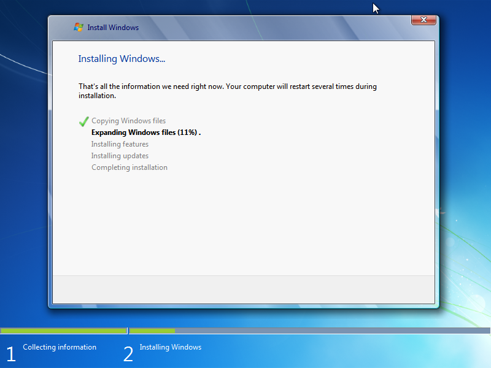
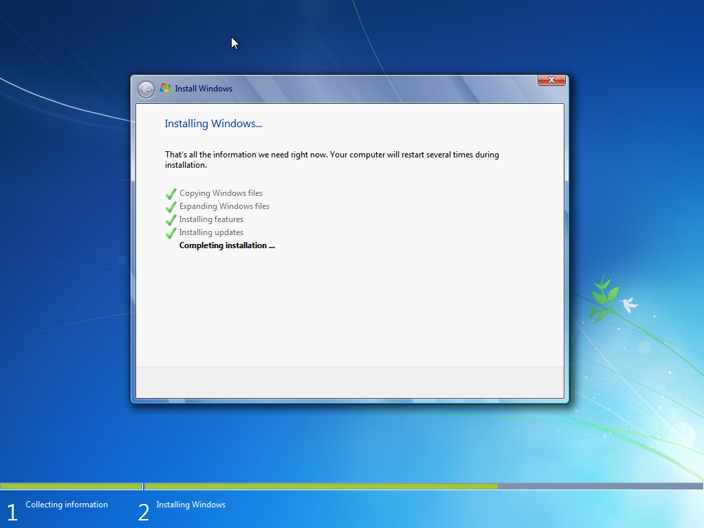
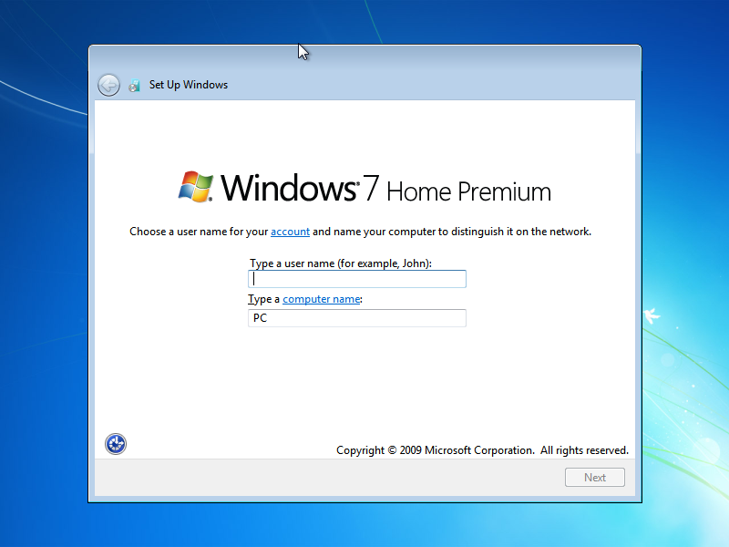
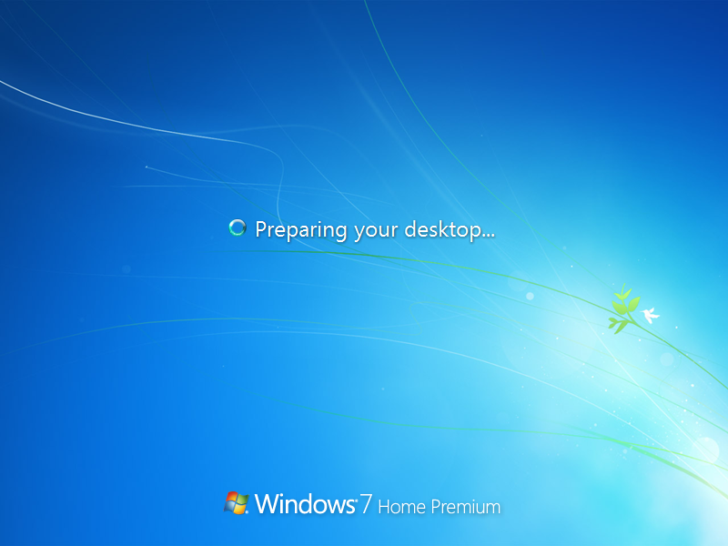
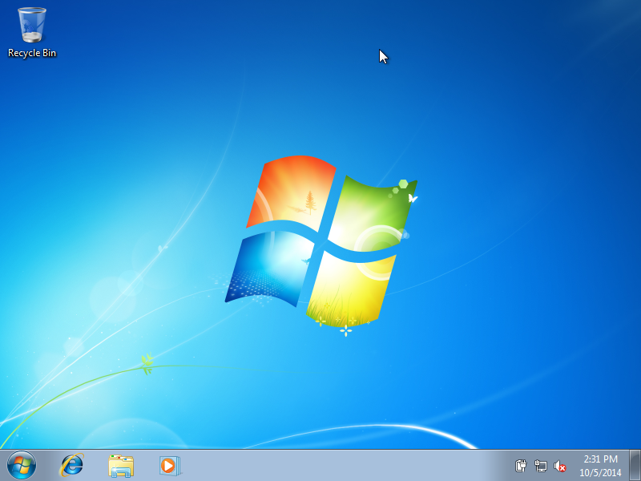